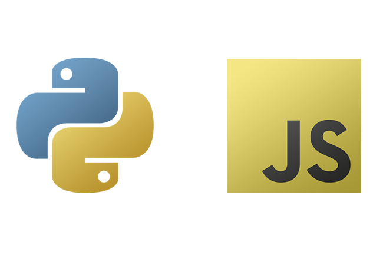

I'm an 18 year-old Canadian software developer-- I'm currently proficient in Python, JavaScript, and Java-- and plan to learn C++ in the near future. I also coded this website, so I have experience coding HTML and CSS. I also tend to dabble in other mediums such as graphic design and film production. I currently study Computing at Queens University.

A little personal history...
I began coding in the tenth grade using the Visual Basic language. I had never had a direct interest in coding before this point, but did wonder how videogames did what they did from time to time.
Then, my focus shifted to Python in the 11th Grade and I quickly became proficient in the language.
Now being a first-year University student, I am self-taught in JavaScript as well, learning Java in school, and also teaching myself what's necessary in HTML and CSS to create this site.
I am of Italian descent, enjoy playing video-games, watching movies, spending time with friends and family, learning, growing, and pushing the capabilities of what code can do.